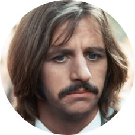

THE
BEATLES
1960 - 1970
A MAIOR BANDA DE TODOS OS TEMPOS
Os Beatles carregam esse titúlo de respeito no mundo musical devido a sua extrema importância em moldar os aspectos culturais, e até sociais do tempo em que estavam em atividade. Os Beatles se tornaram relevantes por quebrar os paradigmas do rock até então estabelecidos, e mudaram a forma de pensar e produzir música, sendo responsáveis pelo surgimento de vertentes diferentes do rock, inspirando essas modificações ou até produzindo, é o caso de genêros como o Metal, Pop e Indie. A “Beatlemania”, se tornou uma febre no mundo todo, sendo a primeira banda a alcançar esse nível de popularidade mundial, eles faziam isso absorvendo diferentes conceitos músicais, e introduzindo esses conceitos em suas canções, trazendo instrumentos de outros países, como a chitara, ou se abrindo para experimentações de músicas de outras culturas, como a japonesa e até brasileira.
JOHN
LENNON

PAUL
MCCARTENEY

GEORGE
HARRISON
RINGO
STARR

PARA CONHECER MAIS
Albuns
1. Abbey Road
2. White Album
3. Revolver
4. Sgt. Peppers
5. Help
Músicas
1. Yesterday
2. Come Together
3. Here comes the sun
4. Hey Jude
5. Eleanor Rigby